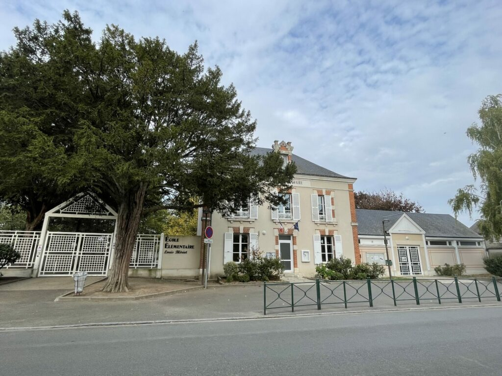
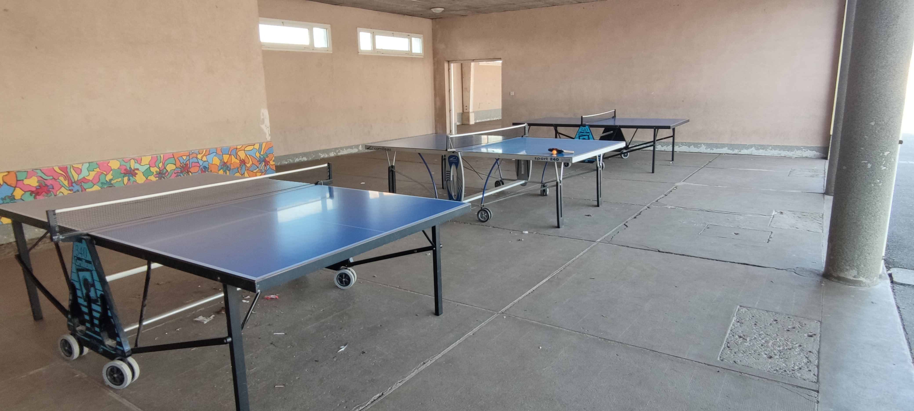

Lundi 24 mars
Aujourd'hui, c'est la photo de classe !
Ce matin, toutes les classes de l’école sont allées faire leur photo de classe avec leurs professeurs.
Les élèves étaient ravis de pouvoir poser dans leurs plus belles tenues, fiers de participer à ce moment tant attendu.
Un grand merci à Mme Dupeyron, grâce à qui cette belle tradition a pu être renouvelée cette année encore
Mardi 25 mars
Aujourd'hui les élèves des classes de CP, CE1 et CE2 ont vécu une sortie aussi passionnante qu’instructive : la visite de la caserne des pompiers d’Artenay
Accompagnés de leurs enseignants, les enfants ont découvert l’univers des sapeurs-pompiers : véhicules d’intervention, équipements de protection, salle des appels d’urgence… rien n’a échappé à leur curiosité !
Voici le résumé qu'ils nous en ont fait : "Nous avons visité la caserne des pompiers d’Artenay. Les pompiers nous ont présenté leurs véhicules, leurs équipements, et la salle des appels téléphoniques. Sur Bob le mannequin, nous avons appris les premiers gestes pour porter secours à quelqu’un. Nous avons aussi manipulé la lance à incendie. Merci à messieurs les pompiers pour cette découverte. "

Jeudi 27 mars
Depuis le début de la semaine, un nouvel élève a rejoint la classe de Mme Rozier.
Ses camarades ainsi que son professeur lui ont réservé un accueil chaleureux.
Tous sont ravis d’accueillir ce nouvel élève et impatients de mieux le connaître. Bienvenue à lui !
Vendredi 28 mars
Aujourd’hui, c’est ping-pong !
Ce lundi 24, les élèves ont eu une belle surprise en arrivant dans la cour de récréation : trois tables de ping-pong avaient été installées sous le préau !
Durant les récréations, tout au long de la semaine, ils ont pu s’initier à ce nouveau jeu, à tour de rôle, en utilisant les raquettes et les balles mises à disposition par l’école.
Une activité ludique et dynamique qui a remporté un franc succès !
